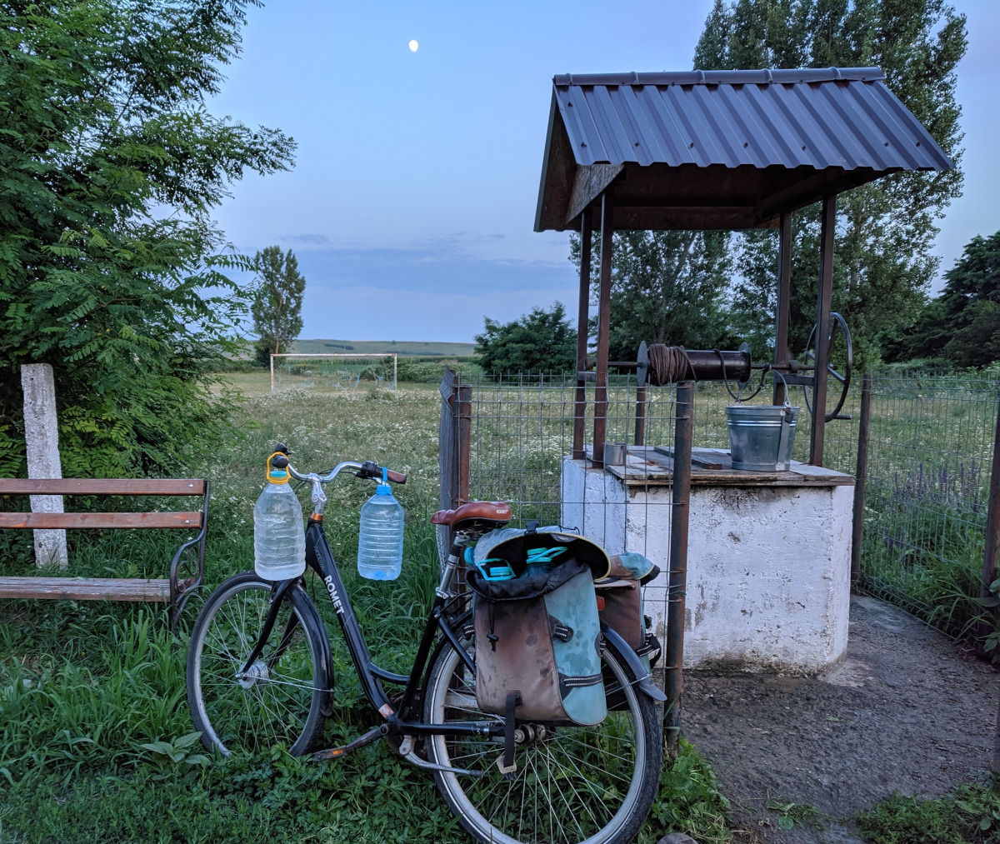

Singurătatea este adesea acută atunci când ești înconjurat de foarte mulți oameni. În furnicarul unui mare oraș, relaționarea cu cei din jur devine foarte dificilă, iar construirea noilor prietenii tinde spre imposibil. Cu toții tânjim după autoizolare și ideea de-a ne cunoaște vecinii de bloc ne sperie, rămânându-ne doar împodobirea propriilor colivii cu vise la preț redus și țeluri fără noimă care nici măcar nu ne aparțin. Astfel, călătoria mea în căutarea sensului și apartenenței a luat naștere dintr-o profundă dezorientare, la un loc cu absența unei busole morale cu adevărat funcționale.
Cu ani în urmă, a ajuns la urechile mele o replică amuzantă: „Mi-am pierdut Nordul!”. Pe atunci nu am înțeles-o, fiind încă prins în meandrele disperării adolescentine, însă de câțiva ani încoace mi-am dat seama la ce se referă.
Contactul cu mediul modern urban și accesul nelimitat la Internet m-au purtat prin idei, concepte și stiluri de viață la care nu cred că aș fi putut visa. Evident, toate acestea la un loc cu conștientizarea mizeriei umane ce se manifestă în cele mai ciudate și bolnave moduri cu putință.
Provenind dintr-o familie muncitorească ce s-a lovit de așa-zisa tranziție de la comunism la pseudo-democrație pe când părinții mei erau în floarea vârstei, am moștenit o bună parte din haosul moral specific acelei perioade. Multe repere dispăruseră, nu existau ținte și idealuri concrete (în afară de cele propagandistice, bineînțeles, înainte de 1989) iar lunga interdicție comunistă de a visa cimentase complacerea bolnăvicioasă.
Expunerea bruscă la Occident a venit într-un moment de foame acută a poporului român – la propriu și la figurat. Modele palpabile nu prea erau de găsit, iar morala creștină fusese strivită sub ateismul Partidului. Astfel, tot ce însemna „produs de import” era ridicat pe un piedestal înalt, mai ales dacă „venea din Vest”.
Oamenii imitau gesturi și obiceiuri văzute în filmele americane, iar posesia unui obiect – de orice natură, fie că era vestimentar, electrocasnic sau alimentar – produs de un brand consacrat în Occident devenise o metodă de identificare cu cei din acea cultură intangibilă pentru noi. De altfel, asta persistă și în zilele noastre: telefoane, haine, muzică, aplicații, mașini, echipament sportiv, diete-minune, etc..
Vreo trei decenii au trecut iar importul cultural ne-a luat cu totul pe sus. Folclorul românesc este asociat cu propaganda comunistă, prostia sau manelele. Tradițiile și credințele au devenit desuete, iar toate obiceiurile și „modurile de a fi” sunt acum niște cutume de care ne distanțăm din răsputeri, îmbrățișând orbește liberalismul exagerat și consumerist ascuns sub masca realismului stiințifico-nihilist. Nu avem un plan național concret la nivelul societății și preferăm scăldarea într-un defetism constant, mândrindu-ne cu ura ce ne-o purtăm. De asemenea, educația spiritului critic și a obiectivității lipsește cu desăvârșire.
Am crescut în toată această ciorbă pestriță, iar firele albe adunate treptat în ultimul deceniu nu par a-mi reflecta presupusa maturitate și, cu greu, am conștientizat lipsa sentimentului de apartenență și a unui sens moral. De aici încolo, drumul s-a dovedit lung și anevoios.
Las Bucureștiul în urmă și-o apuc pe celebrul E85, străjuit de mult prea multe cruci. În cap am o mare varză, alcătuită din oboseală, știri aiurea, postări de pe Strava, fobii, un pic de anxietate, ceva nervi de fond și un profund simț al nimicniciei.
Când facem însă o primă pauză mai lungă în Roman, mă mai liniștesc. Merg în piață, ca de fiecare dată când parcurgem drumul ăsta. O piață mare, autentică, cu legume bune și mafie aparent absentă. Apoi, un popas în Parcul Municipal, pe care abia acum l-am zărit pe hartă și care surprinde prin curățenie, aerisire, numărul de copaci înalți și bătrâni, lacul cu lebede, țestoase și rațe și mica grădină zoologică atent îngrijită.
Cu fruntea mai descrețită, mă urc înapoi în mașină și drumul mă poartă spre Suceava. Senzația de calm crește proporțional cu oboseala acumulată pe parcursul călătoriei. Urmează DN 29A și, în scurt timp, intrarea în județul Botoșani. Casele sunt un pic altfel. Câmpurile lucrate și peisajul vălurit șad așternute sub un cer albastru de vară pe care rătăcesc câțiva nori pufoși. Viteza de croazieră scade, drumul devine mai prost, dar eu încep să surâd ușor.
Simt cum hățurile cotidiene au slăbit suficient de mult cât să încerc o evadare discretă. Telefonul nu prezintă interes, căci am ce admira pe geam, așa că l-am trecut pe „Battery Saver”. Iată Darabaniul, orașul cel mai nordic al țării. Însă punctul meu terminus e Horodiștea, după încă 16 kilometri de șosea.
Cea mai nordică localitate a României, aflată exact la Prut, vecină cu Ucraina și Republica Moldova. Un loc pe care l-am descoperit prin contextul familial abia în 2011 și care mi-a răsturnat, încă de pe atunci, sumedenia de prejudecăți pe care eu – ca un veritabil sudic brunet și-un pic măsliniu ce sunt – le aveam cu privire la zona Moldovei.
De cum ajung în poartă și sunt primit cu îmbrățișări dragi, sunetul găinilor, ciripitul păsărilor, temperatura plăcută și grădina cu legume, ating acea stare de liniște. Nu mai sunt nervos și obosit. Nu îmi pasă de ce-o fi venit pe mail, nu mă interesează cine și ce alergare sau „tură cu bicicleta” a mai postat pe Strava în vreme ce eu îngrijesc un copil și pun pe mine 3 kilograme. Nu mă atinge ce ține de București, la fel cum nu mă ating știrile sau „devotamentul 110%” susținut de „stakeholder-ii” de la corporație.
Aerul este mai tare și temperaturile sunt mai scăzute, indiferent de anotimp. Primesc binețe de la necunoscuți, iar dacă sunt văzut meșterind ceva, câte-un domn întreabă: „Mai ai multă treabă, fecior?”. E de muncă aici, fiind genul acela de loc unde realizezi că viața nu îți vine de-a gata. Este un precept greu de cuprins pentru cei născuți și crescuți între betoanele orașului, rupți de activități atât de naturale, firești și umane încât pare că tânjești după ele fără să îți dai seama.
Este locul în care înveți că dacă vrei să ai ceva, trebuie să muncești. Iar cel ce nu muncește și-și poartă curtea neîngrijită este arătat cu degetul de către ceilalți, dar nu tratat cu lipsa minimului respect.
Găinile trebuie hrănite iar poiata curățată. De la cumpărarea puilor de-o zi și toate detaliile creșterii lor, până la culegerea primului ou sau, la ocazie, prima friptură. Grădina geme după atenție. Buruienile cresc necontenit, via trebuie lăstărită periodic vara pentru a-i asigura aerisirea iar roșiile, castraveții, ardeii, cartofii, vinetele, dovleceii și fasolea galbenă trebuie urmărite cu rigurozitate. Nu mai amintesc de cireși, pruni, meri, peri sau nuci.
Apa e la mare căutare. Dacă pentru uz menajer există o rețea în comună, pentru cea potabilă trebuie mers la una dintre fântânile satului. Le alegi în funcție de vreme și sol. Oricum ar fi, mergi cel puțin un kilometru pentru a o obține. Pe jos sau cu bicicleta, căci aici lumea nu se uită ciudat la tine dacă ai niște genți montate pe portbagajul bicicletei, cărând în (sau pe) ele bidoane cu apă sau lapte, scule, saci cu porumb sau pâine uscată, ori niște pepeni. Pe câmp, lotul unde-ți crești porumbul (din care îți faci mălaiul ce va fi hrană valoroasă pentru găini și pentru tine) se luptă și el pentru atenția ta.
Iar pe lângă toate acestea, ai casa. Trebuie îngrijită și reparată după iernile grele sau ploile exagerat de multe, iar curățenia e sfântă. Căci, la final de zi, ești om, iar omul trebuie respectat. De la măturat, spălat așternuturi și haine, șters praful, văruitul o dată la 2-3 ani, până la prepararea mâncării care-ți dă energia atât de necesară vieții (dar și bucuria de-a o savura alături de cei dragi, atunci când este posibil).
În timpul rămas, să îți vezi copiii sau nepoții alergând prin curte, rumeni în obraji, explorând „natura normală” în vreme ce învață cum să se poarte cu animalele (mai ales cu pisicile și caprele vecinilor) și legând jocuri frumoase unii cu alții, rămâne una dintre cele mai mari recompense.
Seara, trec telefonul pe „Mod Avion” până aproape de prânzul celei de-a doua zi. Mai interesant este că nu-l car după mine în buzunar, rămânând undeva prin odaie. 4G nu există decât dacă ies din curte și merg cam 800 de metri către centrul comunei, iar asta este foarte bine pentru mine.
Prin locurile astea nu auzi despre diete. Există mișcare continuă de intensitate mică și moderată. Oamenii nu ies la alergat pentru dezmorțire și tonifiere, nu postează pe Strava și nu țin evidența caloriilor folosind vreo aplicație de mobil. Găsești muncă, găsești viață simplă, aparent banală, dar cu recompense mari pe planul împlinirilor personale. Nu sunt acele „target-uri” de viață pe care le citești prin reviste, ci ceva cu totul diferit, de care uităm voit.
Iar dacă treci de perspectiva superficială a orășeanului, vei vedea oameni care găsesc timp pentru citit, completat rebusuri și integrame, socializat la un pahar de bere, țuică sau vin, dar și pentru întrunirile mai mari ce se fac cu prilejul sărbătorilor religioase. Căci în comunitățile mici de acest gen, Sărbătorile și biserica au rolul unui compas moral discret ce întreține țesătura socială a oamenilor modești, darnici și zâmbitori cu oricine le iese-n cale.
Mi-am dat seama că nu buschisirea ad-literam a slovei sfinte este miza, ci alinierea la câteva principii simple de moralitate (consacratele „să nu furi, să fii bun cu străinii, să nu fii mânios, să nu minți”, șamd) ce produc efecte benefice în cascadă la nivelul societății. Totodată, practicarea câtorva ritualuri și obiceiuri întărește comunitatea, indiferent de percepțiile individuale. Cu toții știu că există „Ceva” mai presus de tot ce reprezentăm noi, oamenii. Iar acest Ceva este personificarea unui ideal și a echității universale, având ca unic scop ghidarea umanității spre o moralitate ce-i conferă demnitatea. Când preferăm să batjocorim aceste filosofii „primitive” axându-ne doar pe aspectele de suprafață ce nu mai corespund lumii contemporane, pierdem enorm pe plan moral, ajungând la disprețul reciproc și de sine în care ne scăldăm acum.
Toate cele de mai sus sună probabil banal pentru mulți, sau prea firesc ori demodat. Însă, într-o eră în care aventura constantă, frenezia self-help-ului și fetișizarea fitness-ului au devenit piloni centrali ai existenței, fiecare individ văzându-se ca pe ceva special care va schimba lumea, am ajuns să fugim de firesc precum liliecii fug de soare. Desigur, asta nu înseamnă că nu există oameni speciali ce chiar schimbă lumea, doar că sunt foarte rari. Restul suntem oameni normali, oricât de mult pare că ne-ar deranja asta.
Ne este frică de angajamentele „banale” ale relațiilor pe termen lung sau pe viață (vezi căsătoria, pe care o denigrăm cu brio), conceperea și creșterea copiilor echivalează cu o sinucidere intelectuală și compromitere a stilului de viață iar ideea de-a te ocupa de o casă, o grădină și propria-ți existență devine auto-flagelare. De ce ți-ai bate capul, când poți sta pe Facebook și Netflix în timp ce la ușă vine comanda de pizza și curierul cu medicamentele?
Astfel, mi-am găsit Nordul! Chiar dacă plec înapoi spre Capitală, rămân orientat către acest loc, către lucrurile și principiile de viață întâlnite aici. Iar toate acestea, odată interiorizate și însușite, mă ajută oriunde m-aș duce.
În București trebuie să alerg sau să fac exerciții fizice în mod constant pentru a compensa lipsa activității semi-permanente cu care mă desfată Nordul. Totuși, nu sunt suficient de orb încât să ignor problemele specifice acelor locuri: satele sunt depopulate, mulți părinți abia-și așteaptă copiii ce-au fugit spre orașele mari sau alte țări și se abat pe la ei doar pentru a culege bunătăți, iar lipsa infrastructurii și-a serviciilor medicale minime este inacceptabilă în acest secol.
Este nevoie de oportunitatea câștigului financiar (potențial enorm există în agricultura modernă practicată de câțiva tineri ai zonei ce au trecut la fapte și la muncă, asociindu-se). Însă avem multe de învățat din zâmbetul și binețea acestor oameni confruntați cu lipsuri. Poate ar fi de bun augur să reflectăm un pic mai mult la goana noastră după ideile altora, după avuții, obiecte, statut social și digital.
Am găsit că am un rost și încep a vedea bârnele ce mi-s înfipte-n ochi. Până voi reuși să le scot pe toate, mă bucur că nu mai am sentimentul că sunt „just another brick in the wall”.
Nordul tău unde este?